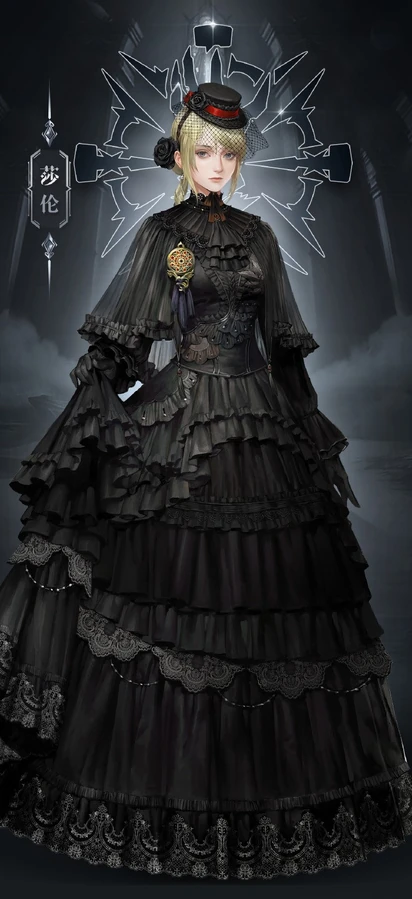

Sharron is a Beyonder of the Prisoner and was a former member of the Rose School of Thought. Because of the conflict in philosophy, she escaped from the Rose School of Thought together with Maric and settled in Backlund. Klein first hired her as a bodyguard to protect himself.
This page includes major-spoiler information from the linked source article. The fact fields below are transcribed from that article’s character infobox.Overview
Sharron is a Beyonder of the Prisoner and was a former member of the Rose School of Thought. Because of the conflict in philosophy, she escaped from the Rose School of Thought together with Maric and settled in Backlund. Klein first hired her as a bodyguard to protect himself.
The page uses the source article’s current naming, status, and progression terminology rather than the older roster shorthand.
Appearance
Role & affiliations
Aliases and titles
Affiliations
- Tarot Club
- Church of the Fool
- Rose School of Thought's Temperance Faction
Occupation(s)
- An Angel of the Church of the Fool
Religion(s)
- Church of the Fool
- Chained God
Pathway & abilities
Pathway: Chained
Recorded progression: Sequence 4: Puppet (Chained Pathway)

Image gallery

Sources
Profile facts were checked against the Sharron article on the Lord of the Mysteries Wiki. The linked source is fan-maintained and may change; it also contains spoilers for Lord of Mysteries and Circle of Inevitability.
Portrait and pathway artwork is shown for reference; credit belongs to the original creators.